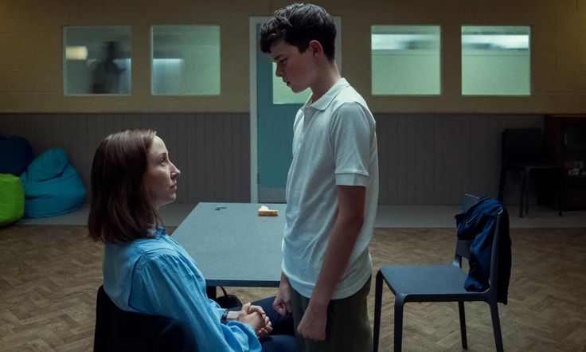

Kvalitativt interview
Vi har valgt kvalitative interviews som vores undersøgelsesmetode. Vi har gennemført tre interviews med tre drenge i alderen 15-18 år. De er alle udvalgt gennem vores sociale relationer. Ingen af de tre drenge er radikaliseret og kan beskrives som almindelige unge teenagedrenge med et almindeligt forbrug af sociale medier. Ved at interviewe dem kan vi derfor få et billede af, hvordan gennemsnitlige unge er påvirket af incel-kulturen.
Vi har valgt at arbejde med kvalitative interviewmetoder, fordi vi gerne vil have dybdegående viden om unges erfaringer og oplevelser på sociale medier med særligt fokus på incel-kulturen. Den kvalitative interviewmetode giver netop mulighed for at få viden om, hvordan udvalgte personer erfarer og oplever et bestemt fænomen i deres eget liv. Det betyder, at vi ikke får en bred viden om mange unge drenges oplevelser af de sociale medier, men nærmere en dybdegående viden om udvalgte drenges oplevelser. Vi valgte at udforme interviewene som et semistruktureret interview (Brinkmann & Tanggaard, 2010, s. 35). Vi udarbejdede en række spørgsmål, som vi stillede interviewpersonerne, og samtidig var vi åbne for, at personernes fortællinger og udsagn kunne åbne for nye spørgsmål.

Af etiske grunde indledte vi interviewene med at fortælle, at undersøgelsen er en del af vores opgave i Digital Kultur, så interviewpersonerne var klar over, hvilken undersøgelse de deltog i. Endvidere gjorde vi dem opmærksomme på, at de var anonyme. Endeligt afsluttede vi interviewene med at spørge interviewpersonen om, hvordan de havde oplevet interviewet. På den måde kunne vi sikre, at det havde været en rar oplevelse for dem og ikke grænseoverskridende.
Efter interviewene har vi lyttet optagelserne igennem to til tre gange. Interviewene skal især belyse den sidste del af vores problemformulering: hvordan incel-kulturen påvirker unge danske mænd. Vi har derfor formuleret følgende interviewguide (Bilag 1), som vi støttede os til under interviewene.
Spørgsmålene skal hjælpe os til at belyse flere forhold, der tilsammen kan give os viden om, hvordan unge mænd er påvirket af incel-kulturen. Disse forhold handler både om, hvilke indhold drengene selv opsøger, hvilket indhold de eksponeres for uden selv at være direkte opsøgende, og hvordan de oplever, at sociale medier påvirker dem.